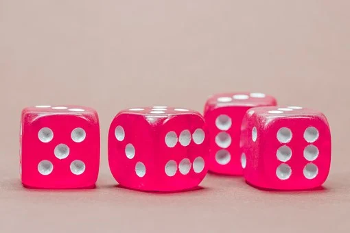
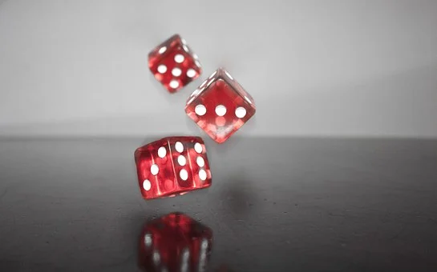
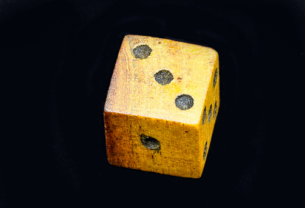
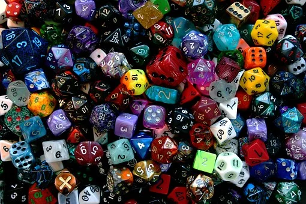
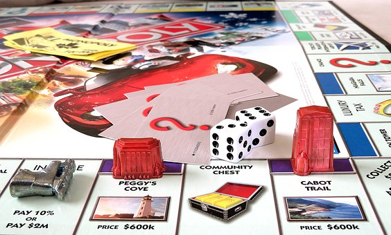

Kości jest to popularna gra dla 2-4 osób, w której gracze rzucają pięcioma
sześciennymi kostkami, by uzyskać określone układy oczek, za które otrzymuje
się punkty.
Celem gry w większości odmian jest uzyskanie największej liczby punktów.
Wbrew pozorom nie jest to gra zależna tylko od szczęścia — liczy się w niej
raczej umiejętność kalkulacji. Kości są grą wywodzącą się ze starożytności,
najpopularniejsza standaryzacja reguł została opatentowana przez firmę Milton
Bradley. Z kości wywodzi się bezpośrednio domino.
Kości są grą samą w sobie, ale oprócz tego bywają niezbędnym elementem innych
gier planszowych czy hazardowych. Bez wątpienia jest to gra, która posiada
edukacyjne i warto ją wykorzystać przy rozwijaniu umiejętności matematycznych
dziecka.

Chciałabym zaproponować bardzo prostą wersję kości, z którą poradzą sobie
dzieci w wieku wczesnoszkolnym o nazwie „Do bazy”. Do gry potrzebujemy 6 kostek.
Gracz, który wyrzuci największą sumę oczek z 2-3 kostek zaczyna grę.
Każdy uczestnik wykonuje po kolei jeden rzut 6 kostkami i wybiera jedną z
wyrzuconych cyfr, jako bazową. Różnice między pozostałymi cyframi a cyfrą
bazową sumujemy i zapisujemy, jako wynik.
Przykładowy rzut:
2-3-4-4-5-6 jako bazową wybieramy np. 4
(4-2)+ (4-3)+ (4-4)+ (5-4)+ (6-4) = 6 pkt.
Dlatego ważne jest, aby wybrać cyfrę bazową tak by różnica między nią a
pozostałymi dała, jak najlepszy wynik. Wyniki z poszczególnych kolejek
dodajemy do siebie i wygrywa osoba, która jako pierwsza przekroczy ustalony
próg punktów np. 100.
Jak, widać gra jest bardzo prosta i wykorzystujemy w niej cyfry, z którymi
dziecko uczące się dodawania i odejmowania świetnie sobie poradzi.

Kości to prawdopodobnie najstarsze z narzędzi służących do gry znane
człowiekowi. Ich wczesna historia i miejsce wynalezienia nie zostały
dotąd ustalone. Najczęściej przyjmuje się, że wynalazła je jedna z
cywilizacji Orientu lub że w różnych rejonach globu „odkrywano” kości
niezależnie. Początkowo funkcję kości do gry spełniały kości skokowe
zwierząt hodowlanych, mające kształt zbliżony do czworościanu.
Namiętnie grywali nimi przedstawiciele wyższych klas starożytnej Grecji.
W złotych wiekach imperium były one podstawowym narzędziem hazardu.
Nawet Horacy drwił ze „szkodliwej rozrywki młodości”, za jaką uznawał
grę w kości. Surowe zasady nie powstrzymały rozwoju gry w kości, a w
Rzymie pojawiło się wielu korzystających z tego oszustów.
Kilkaset lat później w epoce średniowiecza gra w kości stała się jedną
z ulubionych rozrywek rycerstwa. Istniały zarówno specjalne szkoły uczące
wprawnej gry, jak i gildie „kościarzy”. Zmiany w zastosowaniu kości nastąpiły
w XX wieku. Nowe metody produkcji tworzyw sztucznych spowodowały, że łatwo
dostępne stały się kostki o nowatorskim wyglądzie, mające od 4 do nawet
100 ścian.
Rosnąca popularność gier planszowych, bitewnych i fabularnych sprawiła,
iż narzędzie dotąd przede wszystkim hazardowe i wróżbiarskie zyskało wiele
nowych zastosowań. W Chinach, Korei, Japonii, Indiach i innych krajach
azjatyckich kości od wieków były i nadal są niezwykle popularne. Również
oznaczenia kostek do domina i sama gra wywodzi się właśnie od nich.

W kości grywano w Polsce już od średniowiecza. Była to popularna rozrywka
wszystkich stanów, praktykowana zarówno w karczmach, na jarmarkach, jak i
na książęcych dworach. Popularność kości z czasem nie malała, ale grę tę
coraz powszechniej uważano za rozrywkę pospólstwa. W efekcie zniknęła ona
z dworów i pałaców, wyparta przez gry karciane i szachy.
Kości w epoce nowożytnej wykorzystywano między innymi do wróżenia, odczytując
przyszłe losy z liczby wyrzuconych oczek. Pisano nawet specjalne książki, np.
„Fortuna albo Szczęście” Seweryna Bączalskiego, zawierające zestawy przepowiedni
odpowiadających różnym wynikom rzutów. Kości były także narzędziem używanym do
gry w jedną z pierwszych gier planszowych, tzw. gąskę.
Okres rozbiorów i II Rzeczypospolitej to jednocześnie kres popularności kości
jako narzędzia hazardu. Wyparte zostały one przede wszystkim przez gry karciane,
w tym najpopularniejszy brydż. Kości przetrwały przede wszystkim jako element
wykorzystywany w różnych grach planszowych. Do polskiego świata hazardowego
powróciły dopiero po roku 1989.
Pierwsze kości do gry były najprawdopodobniej wykonywane z kości skokowych
zwierząt hodowlanych, np. wołów. Za czasów rzymskich materiał ten został
zastąpiony drewnem, kością i metalem (ołów, mosiądz). Niekiedy stosowano
droższe surowce, chociażby kość słoniową. Wymienione materiały były w użyciu
aż do drugiej połowy XX w., kiedy zastąpiono je tworzywami sztucznymi. Wraz
z rozwojem gier fabularnych i bitewnych wzrosła liczba producentów oferujących
kości wysokiej jakości. Współcześnie powszechnie stosuje się wytrzymałe
tworzywa sztuczne, pozwalające na wieloletnie używanie kości.

Niekiedy kostki wykonuje się z innych materiałów. Bardziej popularne z nich
to spieniona guma, drewno, kamień i papier. W użyciu jest też cała gama metali
i ich stopów. Bardziej wyszukane surowce stosowane do produkcji kolekcjonerskich
kości to między innymi bursztyn i kość słoniowa.
Z odmiennych materiałów wykonywane są profesjonalne kości stosowane w kasynach.
Muszą być one idealnie wyważone i bardzo wytrzymałe, w związku z czym do ich
produkcji najczęściej wykorzystuje się włókno celulozowe.